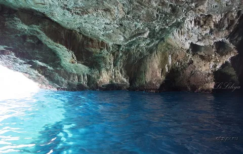

Голубая пещера
Голубая пещера — одно из самых захватывающих чудес Черногории, расположенное на побережье Адриатического моря недалеко от города Мать. Известная своими удивительными успехами синего, пещера создает волшебную атмосферу Посещение Голубой пещеры — это уникальная возможность для любителей приключений: можно плавать на лодке или погружаться в кристально чистую воду, наслаждаясь существованием подводного мира. Окружающие скалы и живописные пляжи — это место для фотографий и роскошных печатных изданий.
